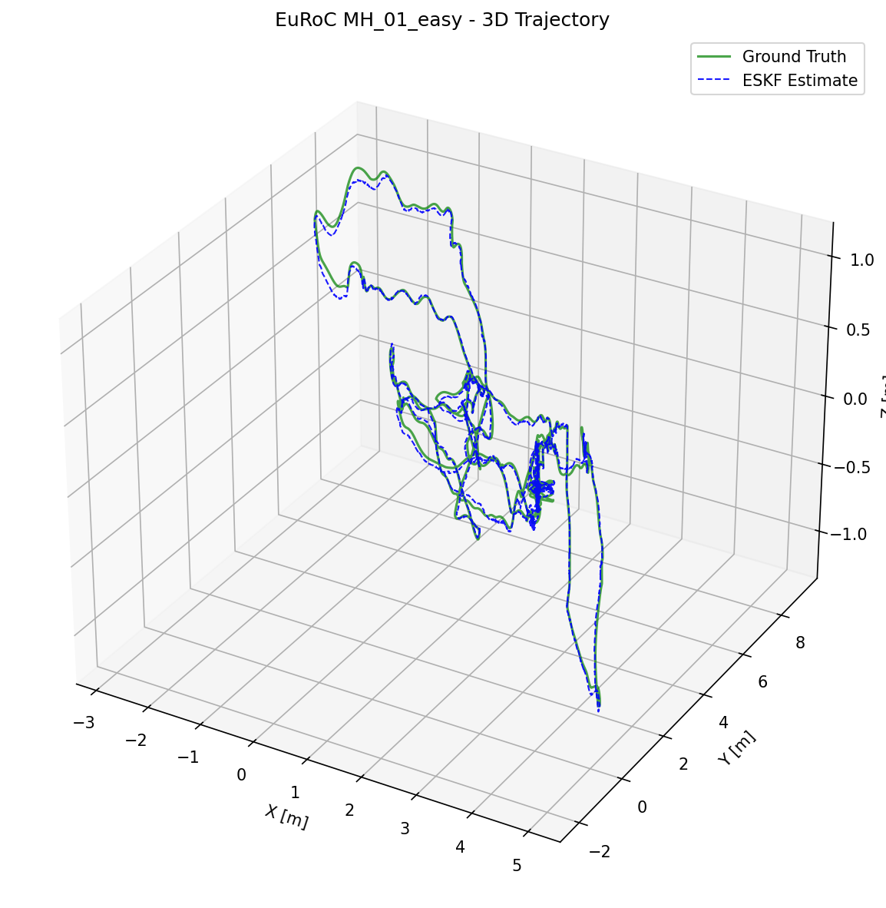
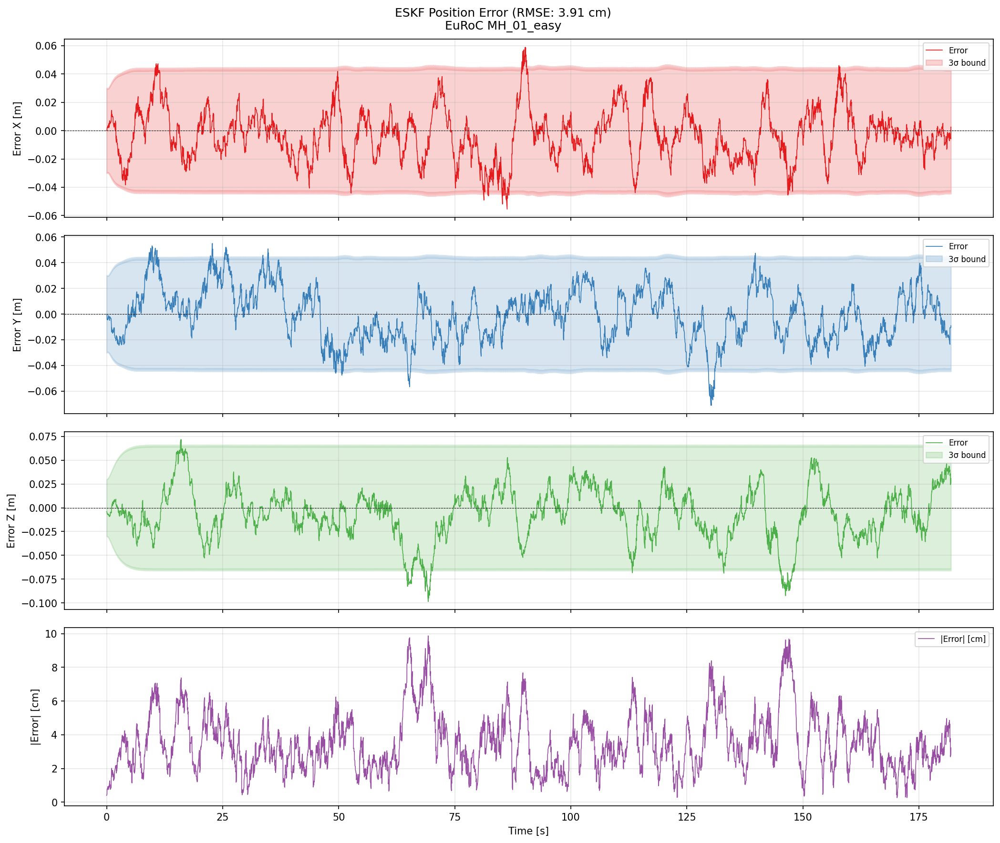
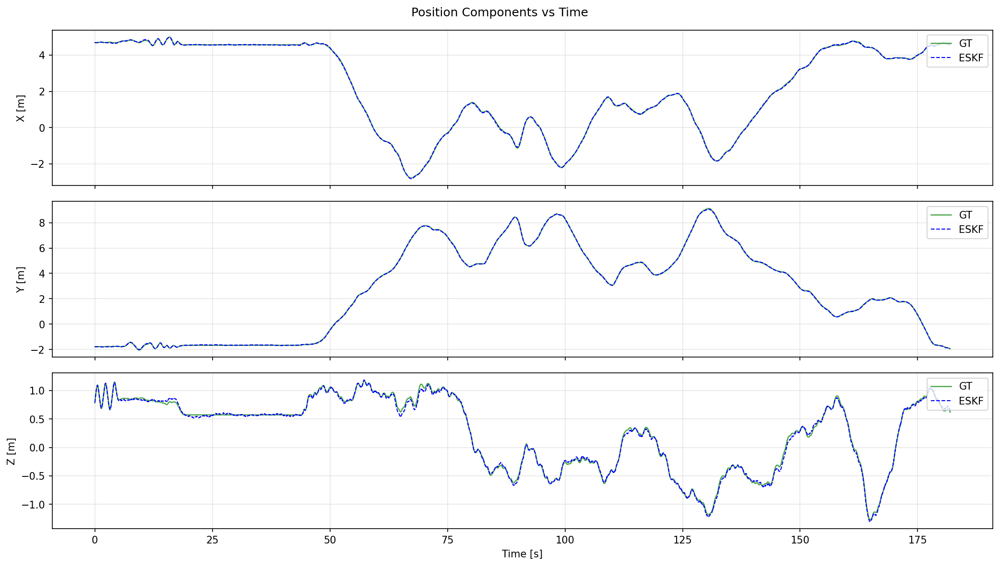
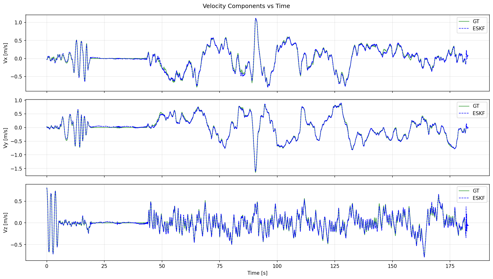

ESKF Sensor Fusion
Pure inertial integration drifts quickly because small accelerometer and gyroscope errors accumulate in velocity, position, and attitude. This project implements the standard correction from scratch in plain Python: a 15-state Error-State Kalman Filter that propagates the 200 Hz IMU stream from the EuRoC MH_01_easy MAV sequence and corrects drift with simulated 10 Hz GPS position and odometry velocity measurements. The full run achieves 3.9 cm 3D position RMSE. The nominal state stores the current estimate of position, velocity, attitude, and IMU biases, while a local error state [dp, dv, dθ, dbg, dba] represents small perturbations around that estimate. Propagation and measurement updates operate on this local error, which is approximately linear, before the correction is injected into the nominal state and reset to zero. The implementation follows Solà’s local-error quaternion formulation (arXiv:1711.02508) and uses RK4 nominal integration, right-multiplicative attitude injection q ← q · dq, and Joseph-form covariance updates. It uses NumPy and a YAML configuration file, without ROS or a larger framework.
The Estimator
- 15-state local error:
[dp, dv, dθ, dbg, dba]contains position, velocity, three-parameter attitude, and IMU bias errors. These are small perturbations around the current estimate rather than a second full state. - Nominal state: position, velocity, quaternion attitude
q = [w, x, y, z](body-to-world), and both IMU biases. This is the state reported by the filter. - Right-multiplicative injection: the attitude correction is
q ← q · dq, applied as a body-frame perturbation. After injection, the error state resets to zero and the estimated bias correction is folded into the nominal state. - Fixed-gravity 15-state variant: the implementation uses
g = [0, 0, −9.81]rather than the 18-state form that also estimates gravity. This is an explicit scope decision.
Propagation & Correction
- IMU propagation: RK4 integrates the nominal state with gravity expressed in the world frame. A linearised 15-state covariance prediction uses the IMU noise densities and bias random walks from
ekf_params.yaml. - GPS correction: position-only update. Odometry correction: velocity-only update. Both are applied in timestamp order as they arrive within the 200 Hz IMU stream.
- Joseph-form covariance update:
P = (I − KH)P(I − KH)T + KRKTis used instead of the naive(I − KH)Pform to preserve numerical symmetry. main.pyruns the ordered update loop: advance the IMU stream, consume newly available measurements, and log the state estimate and selected covariance diagonals.
The Experiment
- Dataset: EuRoC
MH_01_easy, an indoor MAV flight with a 200 Hz IMU and Leica ground-truth trajectory. The loader reads the CSV exports; the raw archive is not redistributed. - Synthetic external sensors: because the flight was indoors, the dataset has no real GPS. Position and velocity observations are generated from ground truth in
eskf/utils/noise_sim.py. - Measurement model: GPS runs at 10 Hz with Gaussian position noise of σ = 5 cm in X/Y and 10 cm in Z. Odometry runs at 10 Hz with 5 cm/s Gaussian velocity noise on all axes.
- Ground-truth initialization: the first ground-truth pose, velocity, and biases are used with small initial covariances. This isolates asynchronous sensor fusion rather than cold-start convergence.
Results & Scope
- 3.912 cm 3D position RMSE over 36 380 samples using seed 42 and the default configuration. This is below the 5–10 cm simulated GPS noise, indicating that the filter combines inertial propagation with repeated corrections rather than following individual measurements.
- Portfolio scope: the implementation focuses on readable, inspectable ESKF mechanics rather than production navigation features.
- Limitations: external sensors are simulated, gravity is fixed, and the covariance transition uses a second-order approximation rather than a full matrix exponential.
- Results can vary with the dataset copy, Python and NumPy versions, and simulation seed. The reported value should therefore be understood as a result from this configuration, not a universal benchmark.
The Pipeline
The estimator is organised as one time-ordered loop with six clearly separated responsibilities.
main.py walks through the IMU stream and applies each simulated GPS and odometry measurement as it arrives, so observations remain time ordered. Propagation and covariance prediction are implemented in imu_predictor.py; the two measurement updates are separate modules; and error injection and reset are defined with the state itself.
| Stage | Responsibility | Rate | Module |
|---|---|---|---|
| IMU propagation | RK4 nominal integration + linearized covariance prediction | 200 Hz | eskf/imu_predictor.py |
| GPS correction | Position-only measurement update (Joseph form) | 10 Hz | eskf/gps_updater.py |
| Odometry correction | Velocity-only measurement update (Joseph form) | 10 Hz | eskf/odom_updater.py |
| Error injection | Fold the estimated error into the nominal state, reset the error to zero | per update | eskf/state.py |
| Configuration | IMU noise densities, simulation rates and noise, initial covariances | fixed | data/config/ekf_params.yaml |
| Output | Estimated position, attitude, velocity, covariance diagonals | per IMU step | output/trajectory.csv |
The filter initializes from the first ground-truth pose, velocity, and biases with small initial covariances. The run therefore measures estimation quality rather than convergence from a cold start.
Results
Full run on EuRoC MH_01_easy, seed 42, default configuration.
| Axis | RMSE |
|---|---|
| X | 1.831 cm |
| Y | 2.027 cm |
| Z | 2.800 cm |
| 3D | 3.912 cm |
The simulated GPS has 5–10 cm noise, yet the fused 3.9 cm error is smaller than an individual GPS sample. This indicates that the filter balances inertial propagation against the corrections instead of tracking the measurements directly. Results can vary with the dataset copy, library versions, and simulation seed.
What I Learned
Four practical lessons emerged from implementing and testing the filter mechanics.
Why estimate the error, not the state
- Attitude lives on a manifold: a quaternion carries four numbers under a unit-norm constraint, so a filter over the full state ends up with an over-parameterized, rank-deficient covariance.
- Representing attitude error as a three-parameter rotation vector around the nominal quaternion gives a minimal, well-conditioned 15-state model. The resulting updates are ordinary matrix operations in the local error coordinates.
- The reset step is where it becomes concrete: after injecting
q ← q · dqand folding in the bias correction, the error state returns to exactly zero. The filter re-linearizes around the new best estimate every time a measurement lands.
Symmetry is a constraint, not a detail
(I − KH)Plooks harmless but can slowly destroy covariance symmetry through floating-point error. The Joseph form is more robust to this effect.- The tests assert structural invariants rather than golden numbers: the covariance stays symmetric (
P ≈ PT) and the error state is exactly zero after every injection. - Cheap invariants like these catch bugs that a “the RMSE looks fine” check would happily ship.
Simulate what you do not have, and say so
- EuRoC was flown indoors; there is no ground-truth-aligned GPS anywhere in the dataset. Synthesizing position fixes from ground truth is what makes the experiment runnable at all.
- It is also the experiment’s biggest caveat: ideal sensors plus additive white noise isolate fusion behaviour, but say nothing about outlier robustness or real GPS failure modes.
- This limitation is important because the low RMSE should not be interpreted as evidence of robustness to real GPS failure modes. The same care applies to the ground-truth initialization.
Figures
A full run on MH_01_easy. The estimate follows the ground-truth path, and the position errors remain mostly within the filter’s own 3σ covariance bounds.




Figures generated by scripts/visualize_trajectory.py and scripts/plot_errors.py. The same limitations apply throughout the run: simulated GPS and odometry, fixed gravity, and a second-order approximation of the covariance transition.